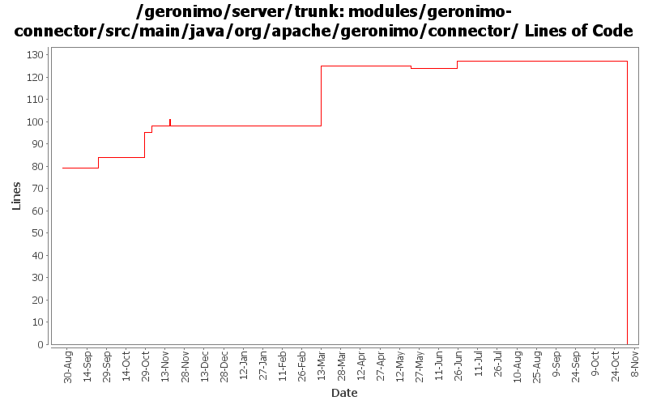

[root]/modules/geronimo-connector/src/main/java/org/apache/geronimo/connector
 globaljndi
(0 files, 0 lines)
globaljndi
(0 files, 0 lines)
 outbound
(0 files, 0 lines)
outbound
(0 files, 0 lines)
 connectionmanagerconfig
(0 files, 0 lines)
connectionmanagerconfig
(0 files, 0 lines)
 connectiontracking
(0 files, 0 lines)
connectiontracking
(0 files, 0 lines)
 security
(0 files, 0 lines)
security
(0 files, 0 lines)
 transactionlog
(0 files, 0 lines)
transactionlog
(0 files, 0 lines)
 work
(0 files, 0 lines)
work
(0 files, 0 lines)
 pool
(0 files, 0 lines)
pool
(0 files, 0 lines)

| Author | Changes | Lines of Code | Lines per Change |
|---|---|---|---|
| Totals | 90 (100.0%) | 191 (100.0%) | 2.1 |
| djencks | 17 (18.9%) | 118 (61.8%) | 6.9 |
| dain | 2 (2.2%) | 33 (17.3%) | 16.5 |
| jlaskowski | 3 (3.3%) | 18 (9.4%) | 6.0 |
| kevan | 33 (36.7%) | 12 (6.3%) | 0.3 |
| akulshreshtha | 9 (10.0%) | 9 (4.7%) | 1.0 |
| jdillon | 7 (7.8%) | 1 (0.5%) | 0.1 |
| prasad | 19 (21.1%) | 0 (0.0%) | 0.0 |
GERONIMO-3565. Modules distributed amongst framework/modules and plugins
0 lines of code changed in 19 files:
GERONIMO-2879 Change few more references to TM (j2eeType=JTAResource)
1 lines of code changed in 1 file:
GERONIMO-906 Component references involved in transaction recovery are backwards. Unfortunately this change includes a lot of import optimizations, I hope they are not too confusing to review
73 lines of code changed in 13 files:
GERONIMO-3135 make getting a connection inside a tx marked for rollback work. This solution has the big disadvantage that it uses a geronimo private interface, but you can't register a synch with a tx after the tx is marked for rollback.
17 lines of code changed in 1 file:
r6720@Bliss: jason | 2007-03-20 01:48:14 -0700
(GERONIMO-2995) Replace backport-util-concurrent usage with java.util.concurrent
1 lines of code changed in 1 file:
Add support for MDB deployment
33 lines of code changed in 2 files:
GERONIMO-2607 reverted 485524
4 lines of code changed in 3 files:
GERGERONIMO-2607 Updated all GBeans to use new GBeanInfoBuilder.addOperation(..) method
4 lines of code changed in 3 files:
GERONIMO-2537 Update the src headers in server/trunk/modules to be compliant with the new ASF src header and copyright policy (http://www.apache.org/legal/src-headers.html). I also did some cleanup of the src headers and tried to make them all a consistent format
12 lines of code changed in 33 files:
GERONIMO-2573 Be more careful about registering Synchronization with non-active tx. Also add a lot of trace level logging to help with the next connection leak.
9 lines of code changed in 1 file:
Partial fix for GERONIMO-2537 All Geronimo source files must be brought in line with the new ASF source header and copyright notice policy
The modules directory is supposed to be migrated. There're some issues with some files, but they'll be handled manually
18 lines of code changed in 3 files:
GERONIMO-2529 track connections closed in afterCompletion better
14 lines of code changed in 1 file:
GERONIMO-2477 Fixed NPE in JCAResourceImpl
0 lines of code changed in 2 files:
GERONIMO-2427. Make ref builders accept either j2ee 1.4 or jee5 deployment descriptor xml
5 lines of code changed in 1 file:
Apply standard properties
0 lines of code changed in 6 files: